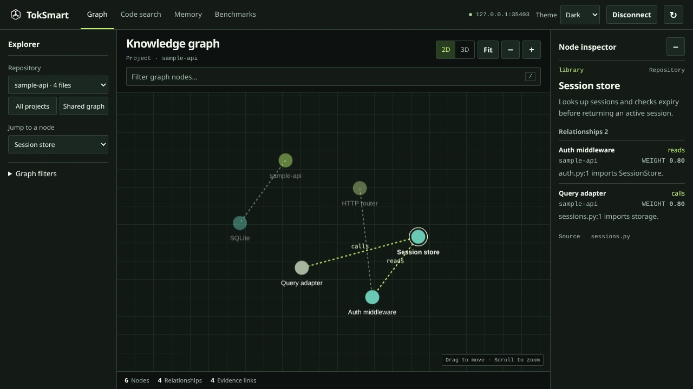

Follow the relationships.
Explore indexed files, symbols, imports and supported static call paths in the 2D graph. Switch to 3D when you want a different view.
Local code intelligence
TokSmart turns a local repository into a searchable map of files, symbols and relationships. Find what matters, trace the impact, and give your coding assistant a focused task brief.
Runs on your computer · Node.js 18+ · Python 3.11+ Using a phone? Try prompts →

The platform / 01
TokSmart indexes your chosen repository without executing its source. Move from a name to its callers, imports and surrounding files, then decide what to change.
Explore indexed files, symbols, imports and supported static call paths in the 2D graph. Switch to 3D when you want a different view.
Find indexed symbols and files, inspect source ranges and see relevant relationships before opening an editor.
Build a bounded context brief for a task. Session deduplication and checkpoints help avoid repeating unchanged context.
Local by design. The SQLite index stays on your computer. You choose which project to add and which context to send to an assistant. Assistant providers handle anything you share with them under their own policies.
Start in minutes / 02
Run TokSmart on your computer. The setup page watches the local health endpoint, shows ping and opens the dashboard when you choose.
Open guided setup →Index an explicitly selected repository. Search works as soon as supported files and symbols have been indexed.
toksmart add /path/to/project
Use the dashboard, CLI or an MCP client to search, inspect impact and retrieve a task brief with a chosen budget.
See commands →Quick start / terminal
Keep the terminal running, then use the guided setup page to see the live connection status.
Node.js 18+ and Python 3.11+ requiredInside the dashboard
Preview the real TokSmart interface. The dashboard runs locally after you start the server.


Reference / 03
Commands and practical answers in one place. The repository has the complete CLI and integration reference.
Install Node.js 18+ and Python 3.11+. Run the command on the computer with your
repository. Keep the terminal open. The hosted setup page checks
127.0.0.1:8765 automatically; the dashboard itself is local.
npx toksmart@latest serve --no-browser
Prefer a stable command? Run npm install --global toksmart, then
toksmart serve --no-browser.
Open a second terminal at your project root. TokSmart indexes only the repository path you choose. Refresh the dashboard and select your project after the command finishes.
# macOS or Linux
toksmart add "$(pwd)"
# Windows PowerShell
toksmart add "$($PWD.Path)"
Run toksmart projects for index counts and errors, or
toksmart sync after changes. A new project can have searchable code
before it has memory nodes in the graph.
Search indexed names and paths. Impact reports statically detected callers and dependencies, so dynamic calls can be missing. Context ranks metadata and approved lessons to fit the requested budget.
toksmart search "SessionStore" --project "/path/to/project"
toksmart impact "SessionStore" --project "/path/to/project"
toksmart context --project "/path/to/project" --task "Find session expiry" --budget 600 --session-id fix-1 --prompt
Reuse the session ID to suppress unchanged results. Use
toksmart checkpoint --project PATH --session-id fix-1 to recall a
compact session summary.
Install the global launcher before setting up an MCP client. Preview the
proposed configuration first, apply it when ready, and restart your client.
Codex and Antigravity have setup options; other stdio clients can run
toksmart mcp --compact-tools.
toksmart setup --project "/path/to/project" --client codex
toksmart setup --project "/path/to/project" --client codex --apply
toksmart setup --test-connectionAgents can propose lessons; only an operator can approve them for later retrieval.
Client compatibility →On a phone, choose Lite for quick requests, Pro for longer work or Coding for reuse-first development. Copy a prompt and paste it into your AI assistant before your task. This page does not require TokSmart to be running.
Explore phone prompts →Full references, measurement methods and maintenance guides live with the source.
Good to know
Keep serve running on the same computer and check the address printed
in the terminal. The hosted setup page checks port 8765. If you chose another port,
open its local address directly. Run
npx toksmart@latest doctor --format text for environment checks.
No. Indexing and storage happen locally in SQLite. The website checks the health endpoint at 127.0.0.1 in your browser. If you use a cloud assistant, only send the context you choose and follow that provider’s data policy.
No fixed savings are promised. Context is budgeted and can suppress unchanged results within a session. In small matched agent trials, token use was mixed and some agents did not call the tools. Measure your own tasks and quality before drawing conclusions.
Coverage varies by language and relationship type. Run
toksmart capabilities for the current support list. Ignored, sensitive,
oversized or unsupported files can be excluded; notebook code cells are outside
source indexing.
Ready when you are